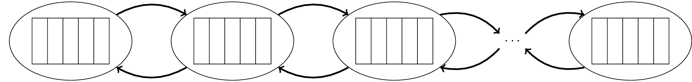

\documentclass{standalone}
\usepackage{tikz}
\usetikzlibrary{arrows,positioning,calc}
\usetikzlibrary{chains}
\usetikzlibrary{shapes.multipart}
\usetikzlibrary{shapes}
\begin{document}
\newsavebox{\task}
\savebox{\task}{%
\begin{tikzpicture}[font=\small,
>=stealth,
]
\tikzset{every node/.style={rectangle split, draw, rotate=90}, rectangle split parts=5}
\node[rectangle split, minimum width= 1.2cm,
minimum height = 1cm] {};
\end{tikzpicture}%
}
\begin{tikzpicture}
{[start chain]
\node[ellipse, start chain, minimum width=90pt, draw] (t1){\usebox{\task}};
\node[ellipse, on chain, right=1cm of t1, draw] (t2) {\usebox{\task}};
%\node[block,on chain,join=by {arrow},right=1cm of N1] (N2) {N2};
\node[ellipse,on chain,right=1cm of t2, draw] (t3) {\usebox{\task}};
\node[ellipse,on chain, right=1cm of t3] (t4) {$\cdots$};
\node[ellipse,on chain,right=1cm of t4, draw] (t5) {\usebox{\task}};
}
% Arrows
\path (t1) edge[very thick,->,bend left=30] node [left] {} (t2);
\path (t2) edge[very thick,->,bend left=30] node [left] {} (t3);
\path (t3) edge[very thick, ->,bend left=30] node [left] {} (t4);
\path (t4) edge[very thick, ->,bend left=30] node [left] {} (t5);
% Arrows
\path (t5) edge[very thick, ->,bend left=30] node [left] {} (t4);
\path (t4) edge[very thick, ->,bend left=30] node [left] {} (t3);
\path (t3) edge[very thick, ->,bend left=30] node [left] {} (t2);
\path (t2) edge[very thick, ->,bend left=30] node [left] {} (t1);
\end{tikzpicture}
\end{document}Created by David Li